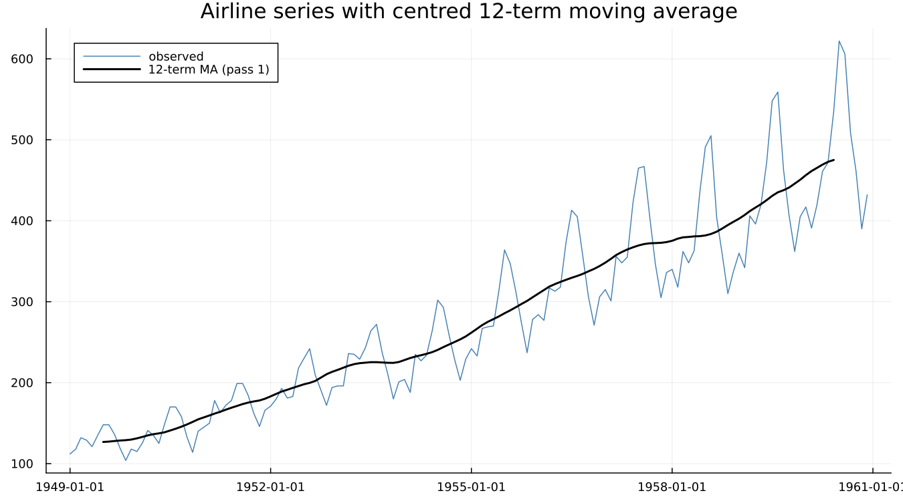
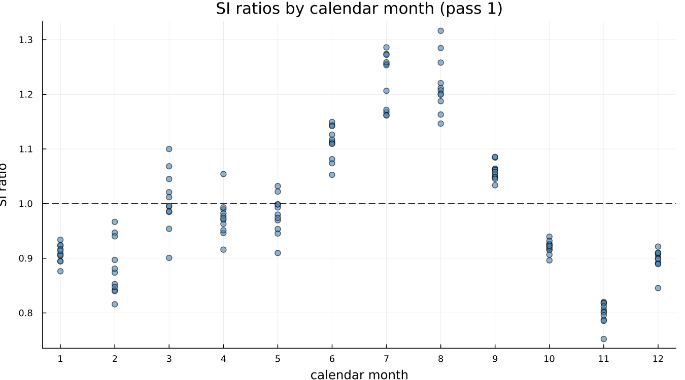
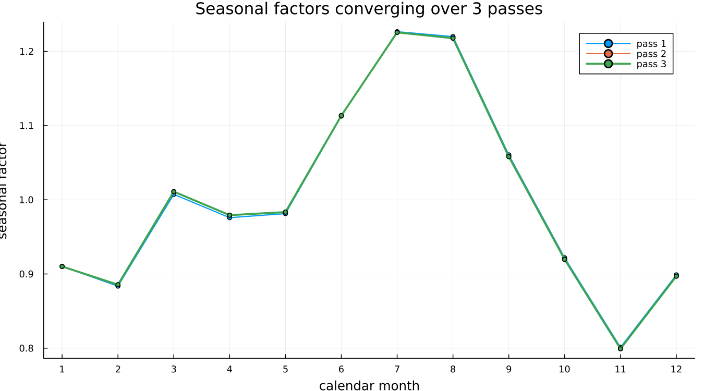

4. X-11 by Hand
4.1 The idea in four steps
Estimate the trend by moving average. Divide it out. Average what remains by calendar month to get the seasonal pattern. Divide that out too.
That is X-11. Everything else in Part II is refinement of these four steps.
4.2 Implementing it
In about fifteen lines: a centred 12-term moving average for the trend, then the ratio of the series to that trend at each point.

The moving average tracks through the seasonal swings without following them — that is what a trend estimate is supposed to do. Dividing the series by it at each point gives an SI ratio: seasonal-plus-irregular, whatever is left once the trend is removed.

Scattered by calendar month rather than by date, a pattern appears immediately: January and February sit consistently below 1.0, July and August consistently above. Averaging each month's column gives a first estimate of the seasonal factor for that month.
4.3 Iterating
Divide the original series by this first seasonal estimate, re-estimate the trend from the result, and re-compute the SI ratios — this time as a comparison against a trend that no longer has last pass's seasonal signal distorting it. Repeat.

On this series the three passes are close to indistinguishable by eye, which is itself the honest result: airline's seasonal pattern is stable and the trend estimate barely needs correcting. That is not always true — a noisier series would show visibly more separation between the passes — but airline converges quickly, and a toy implementation that shows three nearly-overlapping lines is telling the truth about this particular series, not failing to demonstrate the idea.
A genuine trap, caught by getting it wrong first. The natural-looking implementation divides the running, already-adjusted series by the trend at each pass, rather than the original series. That version does not converge — it oscillates, because a series that has already had its seasonality removed has almost none left to detect against its own smoothed trend, so the next pass estimates a nearly flat seasonal, which — divided back into the original series — undoes almost nothing, and the pass after that rediscovers the same seasonal the first pass found. Each pass must re-measure the full seasonal-plus-irregular signal in the original series against a progressively better trend, not a shrinking residual. This is a one-line difference in the code and a completely different behaviour.
4.4 The reveal
This is X-11 — moving-average trend, SI ratios, seasonal averaging, iterate. Every real X-11 run does exactly this, with sixty years of refinement on top:
| This toy | Real X-11 | Where |
|---|---|---|
| simple moving average | Henderson filter, length chosen from the data | Chapter 5 |
| mean by calendar month | a seasonal filter chosen from a family | Chapter 6 |
| three identical passes | B, C and D passes doing different jobs | Chapter 7 |
| no outlier handling | sigma limits and graduated replacement | Chapter 8 |
| multiplicative only | four decomposition modes | Chapter 8 |
| no forecast extension | a regARIMA front end | Chapter 9 |
That table is the syllabus for the rest of Part II and Part III.
The toy above is pedagogical — inline in this chapter, not exported, and nowhere in this package's own source. The package itself always runs the real Census Bureau binary; nothing here competes with it or approximates its output. Comparing the toy's numbers directly against x13()'s own would not be a fair test of either one — the differences are the entire subject of the chapters that follow, not a discrepancy to explain away.
See also: Chapter 5 for what a real trend filter adds; Chapter 9 for why a forecasting model sits in front of the whole procedure.